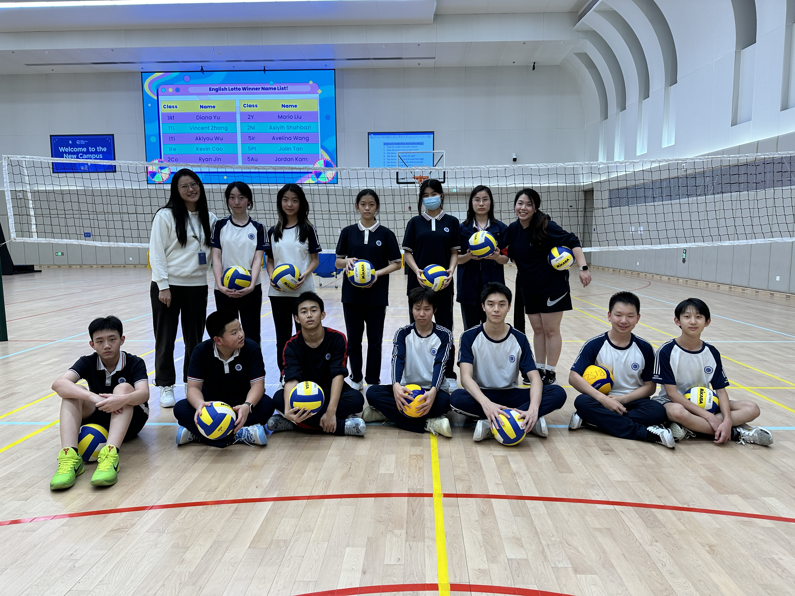

Introduction to our Club
The Soviet-coined ‘Big Three’ includes basketball, soccer, and volleyball. The basketball culture in the US and the soccer culture in South American had played an important role in determining modern culture in numerous areas. In our school, due to the popularity of basketball and soccer, volleyball had been hidden compared to other sports, causing less opportunities for students to learn and practice volleyball. Thus, we started the Volleyball club in attempt to offer more opportunities for volleyball lover and other students to improve in the sport.
The club is focused on improving volleyball skills for the students. Our club meeting mainly includes training centered around the 6 major skills to be mastered: bumping, setting, spiking, serving, defence, and blocking. From these trainings, our club members will be able to experience different dynamics of the sport while learning techniques that will facilitate them to play in our school sport team and outside. We hope that the club will be able to bring relaxation after a stressful weak to our members while providing them with professional guidance
In our website, we will be including basic information related to the sport of volleyball. Moreover, our club members will share their experiences with volleyball and produce videos and articles to share training methods and techniques they learned in the club in order to help fellow students and volleyball lovers outside.